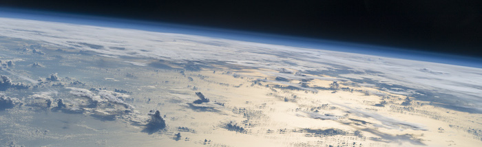

How the Earth and the other terrestrial planets acquired their present-day volatile budgets is one of the biggest unsolved mysteries in planetary science. One key component in answering this question is how much of the existing atmospheres of planets can be lost as a result of impacts. Sarah Stewart and I have calculated how much of a planet's atmosphere and ocean can be lost as a result of a giant impact for a range of different collisions and pre-impact surface conditions. We have developed a scaling law relating the energy of an impact to the amount of atmosphere loss to make it easier to incorporate atmospheric loss into volatile evolution models. We have presented provisional versions of our scaling law at a number of conferences and a paper is currently in preparation. Check back soon for more information.
All photos used on this site are either available under a creative commons license, or are the property of Brian Lock or NASA.